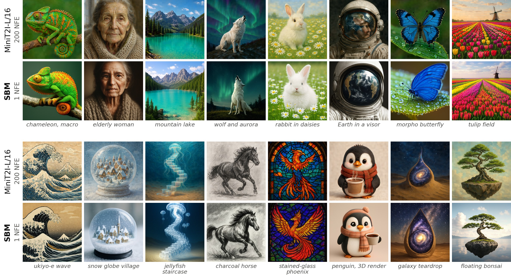

One-Step Generation
- Presenter
- Shiyi Wang
- fwang@math.harvard.edu
- Affiliation
-
- Kempner Graduate Fellow, Kempner Institute
- Junior Investigator, NSF AI Institute for Artificial Intelligence and Fundamental Interactions
- PhD Candidate in Mathematics, Harvard University

Abstract
Beckmann Transport Models (BTM) learn one-step generative maps end-to-end from data, without a teacher, a distillation stage, or pretrained features. We introduce Scalable Beckmann Maps (SBM), which bring to BTM the two ingredients behind the quality of modern multistep generators: classifier-free guidance (CFG) and a training recipe that scales, while keeping sampling at a single network evaluation. CFG combines conditional and unconditional velocity or score predictions, which a Beckmann map does not have. Our guidance rests on one observation: the BTM current is a positive multiple of an autonomous denoising field, to which CFG applies as it does to a velocity. With exact denoisers this gives guided BTM. In practice we substitute the map’s own conditional and null predictions for the denoisers, which requires no additional network and introduces a bias that we characterize. We show that the guided update is consistent with a guided conservation equation, and that guidance can move the boundaries between basins, sending more noise to the modes a condition favors. Trained from scratch in the latent of a representation autoencoder, SBM reaches a one-step FID of 1.6 on ImageNet 256×256 without a teacher or a feature loss, and a GenEval score of 0.86 in text-to-image generation with one network evaluation. As a world model, where we train without guidance, the recipe alone outperforms DriftWorld on all five metrics of two robot-manipulation benchmarks, with 1.9–2.8× less training compute and no pretrained auxiliary feature encoder.
For further details and demonstrations, visit the project page.
Visit the project page → tullebulle.github.io/projects/sbm